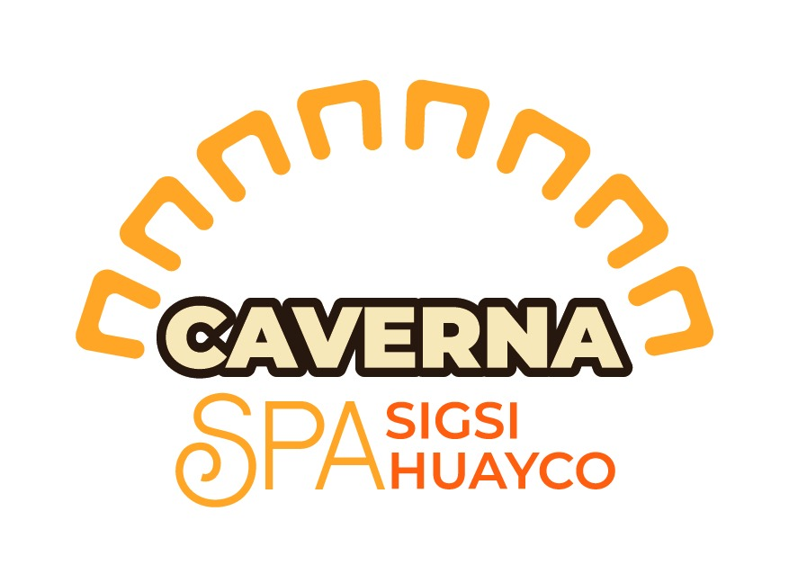

Baños de Agua Santa · Ecuador
Sigsihuayco
Piedra, memoria y misterio
Estamos preparando una experiencia cultural y geológica para recorrer las Cavernas de Sigsihuayco: su territorio, su memoria local y las leyendas que nacieron frente a lo desconocido.
Sitio en preparación